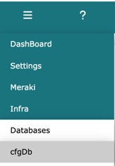
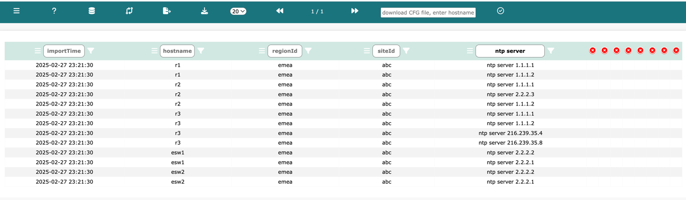
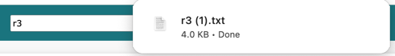
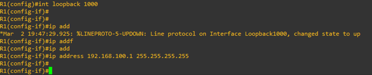

Log into Network Vista, open the menu (top left), and select infra then Databases and cfgDb:

The infra configuration DB is similar to any other Network Vista database however, the input parser has been custom-built to preserve the tree like structure of a standard configuration file. Whenever a branch or branch of branch appears within the configuration file, Network Vista indents the output into the next column. This allows for better searching and slicing of data queries.
Note: any column that contains no output will be automatically closed
Example, searching ntp server under column zero (the root column)

then refining the query to include only r3
To download a copy of a device configuration file, enter the name of the device in the download field found in the main navigation bar
Click and Network Vista will download a copy of the file


To download a copy of the viewable table, click


To access the config diffs, click , the past Seven days of Diffs will be displayed.
Note: unlikely regular Network Vista Diff tables, it is not possible to select and group diff's. Diff changes are automatically assigned to groupBy values

Example, added new loopback interface

New Loopback interface displayed in Green